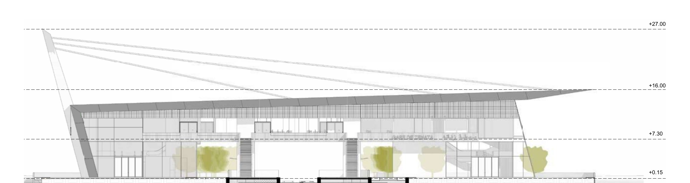
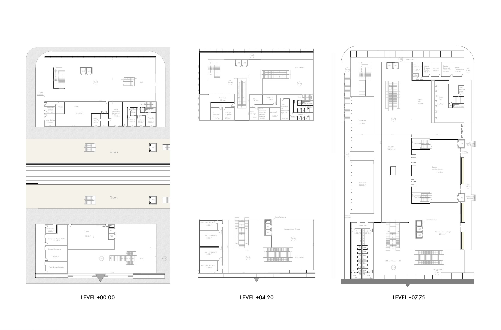

Zenata Station | Yassir Khalil Studio | Casablanca
A regional rail station for the Casablanca metropolitan network, designed as part of a feasibility study for a new RER-type line connecting the eastern suburbs of Casablanca to the city centre. The station serves as a multimodal interchange, integrating intercity rail, bus, and soft mobility within a single covered structure at the edge of the Zenata industrial and residential development zone.
Zenata Station
- Location
- Casablanca, Zenata eco-city
- Year
- 2025
- Office
- Yassir Khalil Studio
- Type
- Regional Rail Station
Yassir Khalil Studio / Competition / 2nd Place
Project
The architectural proposal addresses the civic dimension of infrastructure at the city scale: the station is designed to be legible from the highway approach and to create a covered public space that functions beyond train times as a place of urban activity. The project was developed at Yassir Khalil Studio with Hazem co-authoring the structural coordination and the organisation of passenger flows, and was recognised with second place in the competition organised by the Casablanca metropolitan transport authority.
Competition: 2nd Place | Casablanca Metropolitan Rail
Drawings and images
Long elevation
Fig. 1

Plans
Fig. 2

Interiors
Fig. 3


Exterior
Fig. 4
Programme and Longitudinal Section
Fig. 5
Film
Arch Film | Morocco | 2025Regional rail station. Structural canopy, covered concourse, and multimodal interchange at the edge of Casablanca. Competition: 2nd place.